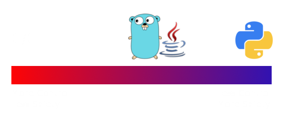

Overview
- Why Rust?
- Borrowing and Lifetimes
- &str and String
- Memory and Mutability
- Concurrency
- Error Handling
- Misc/Examples
Why Rust?
Why create a new language anyways?
We already have what we need.
Spectrum of Control and Safety

Borrowing and Lifetimes
bracket bodies unless otherwise specified
Resources
the rust book yo
Generalized Rule
&str - when you don't need ownership
String - when you do need ownership
To Panic or not to Panic
- No recoverable exceptions
- Option
- Result
Misc/Examples
strings
http://arewewebyet.com/
let _: () = [variable];
multirust
cargo rustc --bin rusty-magento -- -Z unstable-options --pretty=expanded
Intro to Rust
FizzBuzz
Questions?
Casey Allred
@sbditto85
sbditto85@gmail.com
programwith.us